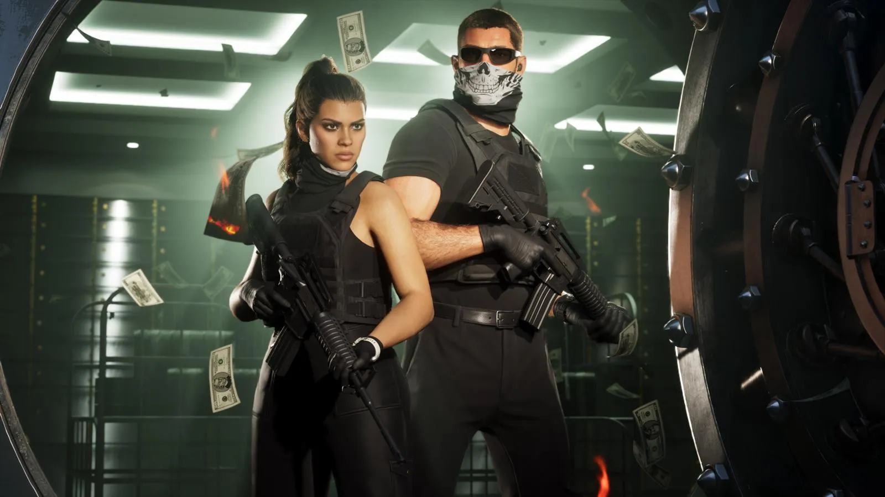
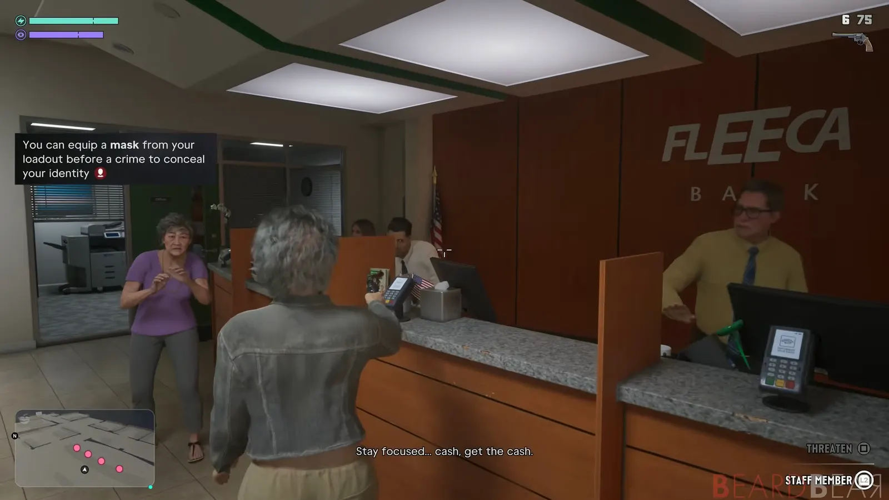
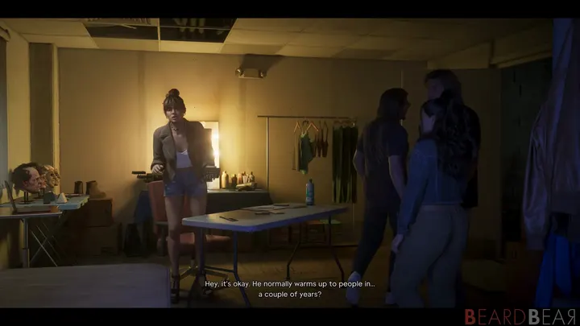
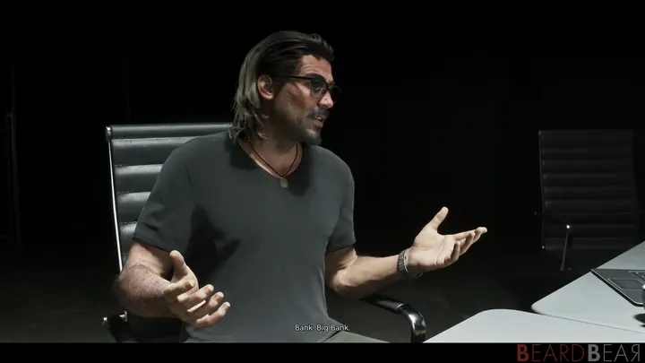
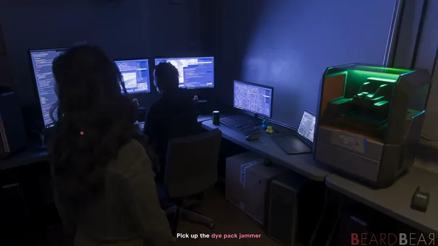
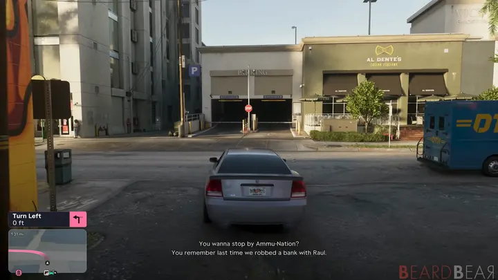
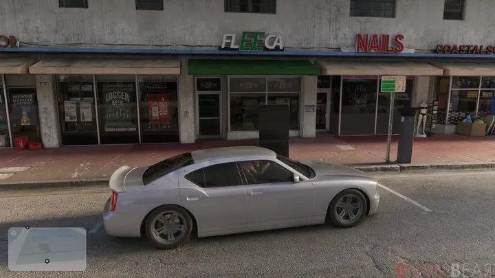
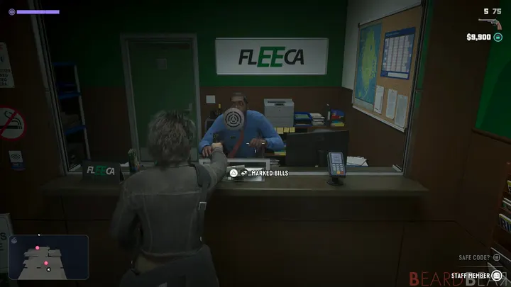
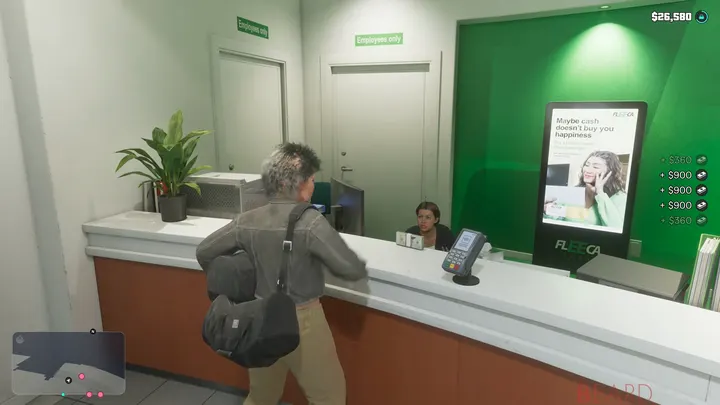
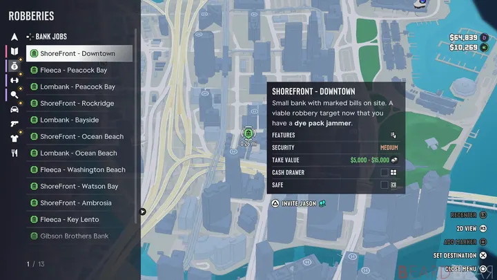

Credit Check: прохождение миссии GTA 6
Опубликовано:

- Испытание от команды Рауля: Джейсон и Лусия грабят три отделения Fleeca за один заход — и в каждом задача своя. После этой миссии ограбления банков и микрозаймов становятся обычным занятием в открытом мире.
- Глава 3, миссия 15 из 26. Играем за: Джейсон и Лусия.
- Награда: $6 000, глушилка Dye Pack Jammer; открываются ограбления банков, крупных банков и микрозаймов по всей карте.
Миссия коротко
| Глава | 3. Tits Ass Drug Money |
| Номер в сюжете | 15 |
| Играем за | Джейсон и Лусия |
| Кто даёт | Рауль Баутиста |
| Где начинается | Вайс-Сити, Crosstown — домофон у мастерской Vice Vinyl |
| Условие | после Crosstown Traffic |
| Награда | $6 000, глушилка Dye Pack Jammer; открываются ограбления банков, крупных банков и микрозаймов по всей карте |
| Переиграть | нельзя — сохраняйтесь вручную |

Где начинается
Прохождение по шагам
- Познакомьтесь с командой: поговорите с Андреа, выберите набор масок, поговорите с Каримом.
- Возьмите Dye Pack Jammer (по желанию — бомбы-липучки) и уезжайте на машине Фелипе.
- Fleeca в Washington Beach: запугайте охрану — □ (X), заберите деньги из 4 отмеченных касс.
- Уйдите из зоны поиска.
- Fleeca в Ocean Beach: велите напарнику ждать (→, затем □ (X)), войдите один, вскройте заднюю дверь и сейф.
- Быстро к машине.
- Последний Fleeca на юге Ocean Beach: охрана, 4 кассы, отбейтесь от тревожной группы.
- Разделитесь, чтобы уйти от полиции: →, затем △ (Y).
- Вернитесь в квартиру в Bayside и откройте дверь.
















Советы
- Надевайте маску до входа.
- Выбить оружие из рук охранника — плюс к профилю Professional.
- Сумка полна — переключитесь на второго героя.
- Паркуйтесь на тротуаре носом к дороге — так уезжать быстрее.
Подробности и секреты
- Приходить нужно вдвоём: к метке у мастерской Vice Vinyl, домофон у входа. Наверху Андреа даёт выбрать маски, а Карим — глушилку Dye Pack Jammer; со стола можно взять и динамитные шашки (games.gg, wiki.eso-ui, Magic Game World).
- Глушилка нужна, чтобы потом брать помеченные купюры в банках и микрозаймах (Magic Game World, gta6.house).
- Первый банк — Fleeca в Washington Beach: напугайте охрану и опустошите четыре отмеченные кассы (GTABase, theclick).
- Второй банк: напарник ждёт в машине, вы заходите один, выбиваете у кассира код сейфа и взрываете внутреннюю дверь; обходите зону поиска полиции вокруг первого банка (gta6.house, wiki.eso-ui, theclick).
- В третьем банке тревога срабатывает раньше: берите кассы, не лезьте в сейф и уходите (gta6.house, damnmodz). По данным gta6.house, если задержаться внутри, Рауль отменит дело.
- После миссии открываются Ride or Die и Sinfrontera National Bank (wiki.eso-ui).
Что можно пропустить
Пропустить нечего; набор масок — на ваш вкус.
Частые вопросы
Что открывает Credit Check?
Ограбления банков (Bank Jobs), крупных банков (Big Bank Jobs) и микрозаймов (Payday Loans) по всей карте, плюс глушилку Dye Pack Jammer и $6 000.
Зачем нужен Dye Pack Jammer?
Он не даёт сработать краске в пачках — так можно уносить меченые купюры.
Что такое Dye Pack Jammer?
Глушилка, которую Карим выдаёт в Credit Check: с ней можно брать помеченные купюры в банках и микрозаймах.
Как открыть сейф во втором банке в Credit Check?
Пригрозите кассиру, чтобы получить код сейфа, затем взорвите внутреннюю дверь.
Источники: PowerPyx, «GTA 6 Credit Check (Meet Raul’s Crew) Walkthrough», 18–19.11.2026; Game8, GTABase, Magic Game World, gta6.house, games.gg, wiki.eso-ui, theclick, damnmodz — Credit Check, 23–28.11.2026. Кнопки указаны для PS5, в скобках — Xbox. Названия миссий — как в английской версии игры.